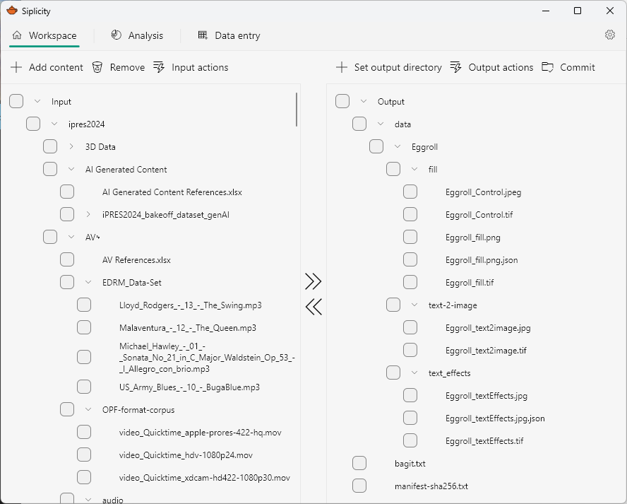
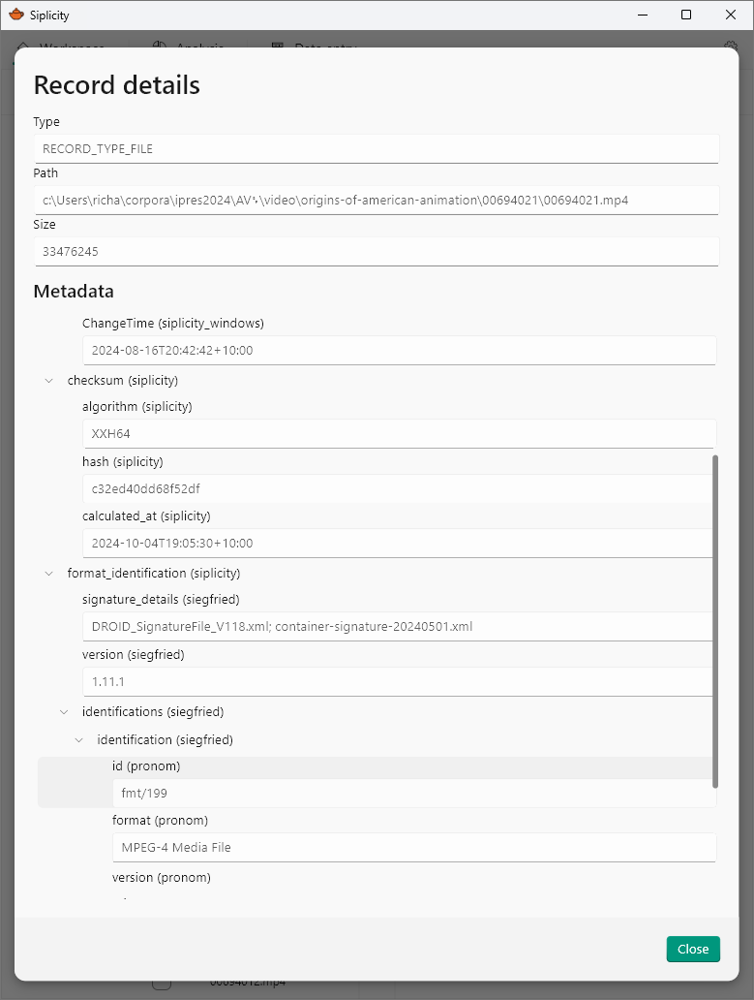

Screenshots
Workspace Pane
The workspace pane is where you select, structure, describe digital content and export to your preferred targets.

Details view
Within the workspace pane you can select and view the details for particular records. Siplicity’s metadata model allows for the capture of arbitrarily deeply nested metadata structures. This means, for example, that you can capture the time a checksum was performed, along with the algorithm. For siegfried results, you see the full information reported for identifications, as well as metadata about the siegfried process itself (siegfried and PRONOM version details).
